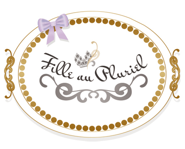
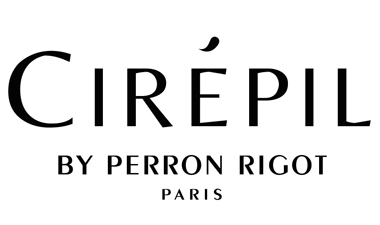

POUR VOTRE CORPS...
L’atelier des délices
Atelier des délices à conçu pour leurs clientes une gamme de soins innovante et originale.
Il allie des compositions naturelles et bio avec toutes les dernières technologies dans le
respect de la qualité, de la personne et de l’environnement.
L’atelier des Délices a pour objectif de vous offrir le meilleur de l’intelligence végétale
avec des textures agréables, pour un résultat prouvé. C’est une marque Bio, certifié par ECOCERT.
POUR VOTRE MAQUILLAGE...

Miss W
Miss W a conçu
pour ses clientes une gamme de maquillage innovante, originale et tendance.
Miss W allie des compositions naturelles et bio dans le respect de la qualité, de la personne et de l’environnement.
Miss W est une marque du groupe Nature.cos, dont la quasi
totalité des produit est certifiée par ECOCERT ou QUALITE FRANCE.
POUR VOTRE MAQUILLAGE PERMANENT...
Amiea
La gamme ‘Amiea’, c’est un concentré de nouveautés technologiques. Elle est la finalisation de longs travaux
en collaboration avec les professionnels de la pigmentation esthétique qui ont travaillé dans plusieurs directions
: la sécurité, la prise et la tenue de la couleur dans le temps et l’évolution de la teinte.

POUR VOTRE EPILATION...
Fille au Pluriel
Parce qu’une peau douce et délicate fait partie des principaux atouts de la séduction féminine, Fille au Pluriel, spécialiste de l’épilation,
a conçu pour les esthéticiennes et leurs clientes des cires innovantes, de qualité supérieure.
Le souhait de “Fille au Pluriel” est de mettre l’épilation au même niveau qu’un soin du corps, en proposant
des cires de haut de gamme qui, grâce à leur qualité d’épilation favorisent le confort, le bien-être et la relaxation.
- 
- 
Cirépil
Cirépil® est une marque dédiée aux produits du soin épilatoire haut de gamme destinés
aux professionnels de la beauté. Elle comprend des cires à épiler de qualité, des produits
pré et post épilation, des accessoires et du matériel nécessaire à la prestation.
POUR VOS ONGLES...

Crystal Nails
Crystal Nails est une marque internationalement reconnue pour ses formations
et gamme de produits et formations également dans les marchés Américains et Canadiens.
Nous travaillons continuellement sur le développement de nouveaux produits et techniques
de formations, pour être les meilleurs dans cette industrie.
Marylin Nails
MarilyNails se sont concentrés sur deux aspects principaux lors de la création
des produits et accessoires. Leur objectif est de fournir un service de qualité
avec des produits à un prix abordable, en plus des développements permanents –
avec toutes les normes de l’Union Européen et le respect des exigences de santé.

POUR VOS PIEDS...

Mavex
Mavex est une societé Suisse qui produit et distribue dans le monde
entier des cosmétiques naturels à base d’herbes médicinales et de plantes alpines.
Les cosmétiques Mavex ne contiennent pas de parabènes, de formaldéhyde, de conservateurs ajoutés, d’huiles minérales ou de paraffine.